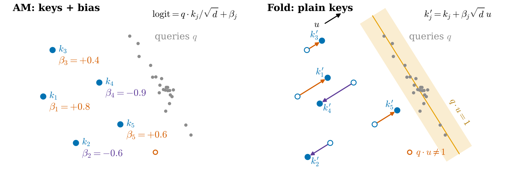
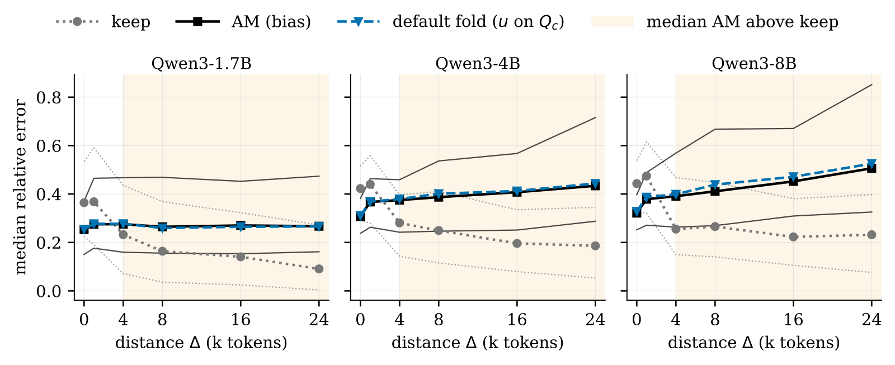

长文档问答里，KV cache 压缩已经能把一篇文档的缓存砍到原来的十分之一而答案基本不变，可这类方法在 vLLM、FlashAttention 上跑不起来。原因很具体：效果最好的 Attention Matching（AM，一种按注意力输出拟合来压缩缓存的方法）在每个保留下来的 key 上加了一个偏置，让 attention 分数变成“q·k 再加一个常数”，而标准 kernel 和分页缓存只收 key 和 value，没有地方放这个常数。这篇论文的办法是把偏置“折进” key 里：每个注意力头找一个方向，把每个 key 沿这个方向挪一段与偏置成正比的距离，挪完后对绝大多数 query 来说，分数的变化正好约等于那个偏置。结果是一份普通的 KV cache，大小和 AM 一样，不改模型的 query 计算。每个头预算相同时，它在两个长文档问答集的 14 组设置里有 13 组和 AM 的准确率统计上分不出差别；不改源码的 vLLM 在一张 T4 上能同时装下的请求从 4 个变成 31 个（保留 10%），解码峰值从每秒 29 个 token 升到 200 个。
做长上下文推理和 RAG 服务的团队值得读。它解决的不是压缩效果，而是压缩结果能不能交给现成推理引擎，这是 KV 压缩从论文走到线上最常卡住的一步。核心思想一句话：偏置是和 query 无关的常数，key 的贡献和 query 成正比，只要找到一个方向让 query 在上面的投影几乎总是 1，常数就能用 key 的位移来模拟。需要注意的是，这个结论建立在“每个头保留同样多的 key”上；AM 原文给不同头分不同预算时效果更好，那种设置下折叠的优势变小。
它到底在解决什么问题？
先看 AM 怎么压缩。模型读完文档后，作者在输入后面加上复述指令和文档全文，再做一次 prefill。作者每隔一个位置从这次 prefill 取一个 query，作为“参考 query”。这些参考 query 给第一次 prefill 存下的 key 打分。作者还计算它们对这份完整缓存的 attention 输出，作为拟合 value 的目标。每个 key-value 头先汇总参考 query 对每个 key 的注意力，再保留得分最高的一小部分 key，比如 10%；作者的拟合按平均注意力排序，AM-style 拟合按注意力的均方根排序，再用最小二乘重新拟合这些 key 对应的 value，让压缩后的 attention 输出尽量接近原来的输出。
为什么还要偏置？因为丢掉 90% 的 key 后，文档在 softmax 里分到的总权重变小了，后面问题里的 token 会显得更重要。用一个能心算的例子（示意）：文档有 1,000 个 token，每个 key 的分数都差不多，压到 100 个之后，文档在 softmax 分母里的总量少了 10 倍。给每个保留的 key 加一个偏置 ln 10 ≈ 2.3，相当于让它在 softmax 里算 10 份，文档的总权重就补回来了。AM 拿一批参考 query 来求这个权重：用非负最小二乘让每个参考 query 在保留 key 上（乘上权重后）的 softmax 分母总量，尽量等于它原来在全部 key 上的总量。权重取对数后就是偏置，限制在 −3 到 3 之间。
问题出在部署：
| 方案 | 缓存里存什么 | 标准 kernel 能不能直接跑 | 代价 |
|---|---|---|---|
| AM 原样 | key、value、每个 key 一个偏置 | 不能，要写带偏置的 kernel | 每个引擎、每种 GPU、每种缓存布局都要写一遍 |
| 给 query 和 key 各加一维 | 维度变成 129 | 能，但要改 query 计算 | vLLM 实际会按 136 或 256 维存，显存变大 |
| 直接丢掉偏置 | key、value | 能 | 失去文档权重的补偿 |
| 折叠（本文） | 挪过的 key、重拟合的 value | 能，维度不变 | 对少数 query 有近似误差 |
本文测得，带偏置路径的单序列解码耗时为最快普通路径的 1.02 到 1.29 倍，batch 为 8 时最高为 1.90 倍。卡住部署的是可用性：分页缓存、前缀缓存、跨引擎的 KV 传输，传的都是普通的 key 和 value 块。
折叠怎么做？

关键是一行代数。把 key 改成 ，其中 是这个 key-value 头的所有保留 key 共用的方向， 是头维度。拟合 时，把共享该 key-value 头的所有 query 头产生的上下文 query 合在一起。那么新的分数是：
AM 要的是“原分数加 ”，折叠给的是“原分数加 乘以 ”。只要 等于 1，两者完全一样。所以整件事归结为：找一个方向，让以后的 query 在它上面的投影尽量接近 1。
手算一下（示意）：某个保留 key 的偏置是 0.8。一个 query 的 ，它看到的偏置是 0.88，多了 0.08；另一个 query 的 ，看到 0.76。偏置在 −3 到 3 之间，误差就是“偏置 × 投影离 1 有多远”。
为什么能找到这样的方向？未来的 query 没法提前知道，但模型在读文档时已经产生了几千个 query，它们的分布和之后提问时的 query 相近。作者用上下文 query 集合 闭式求出 。在下游问答基准里， 就是参考 query 集合 ，作者也用它拟合偏置和 value。这些 query 来自第二次复述 prefill，每隔一个位置取一个。在逐头分析里，作者用首次 prefill 全部 4,096 个位置的 query 求默认方向，用最后 1,024 个位置的 query 拟合偏置和 value。计算时，先算 query 的均值 和协方差 ，取 ，再缩放成 。这样求出的方向保证这些 query 的投影平均正好是 1。在这个约束下，作者最小化投影方差加 。只有不加正则项时，求出的方向才严格最小化投影方差（ 是一个很小的正则项，用来防止矩阵求逆不稳定）。直觉上，它挑的是 query 们“站得最齐”的那个方向。
误差有多大？作者证明了一个上界。先不做折叠后的 value 重拟合，让两份缓存使用相同的 value。这时，折叠和 AM 的输出差不超过 ， 是这个 query 关注的 value 之间最远的距离。还有一个更直观的结论：丢掉偏置就相当于 。让 AM、折叠和丢掉偏置三种缓存都保留 AM 的 value。如果 query 关注的 key 之间偏置差异较小，一阶近似下，折叠的误差约等于“丢掉偏置的误差 × ”。投影离 1 只差 0.1 时，误差约是直接丢偏置的十分之一。
最后，作者用折叠后的 key，通过最小二乘重新拟合 value。这一步替代 AM 原来的 value 拟合，也吸收了参考 query 上的部分折叠残差。整个折叠的额外开销是每个头一次协方差、一次 d×d 的线性求解和一次秩一更新，比 AM 本身的拟合小得多。
实验：和 AM 一样准吗？
实验要回答两件事：折叠后准确率是否保住了 AM 的水平，以及是否比直接丢偏置好。用的是 QuALITY（长文章四选一阅读理解）和 LongHealth（每位患者一万多 token 病历的五选一问答），每个头保留 10% 或 5% 的 token，预算各头相同。四种缓存保留同一批 key：keep 用原 value 不加偏置，drop 重拟合 value 不加偏置，AM 加偏置，fold 是折叠。
LongHealth 上压缩的影响最明显，下面是保留 10% 时的准确率（%）：
| 模型 | 完整缓存 | keep | drop | AM | fold |
|---|---|---|---|---|---|
| Qwen3-1.7B | 68.3 | 36.2 | 38.9 | 39.9 | 35.4 |
| Qwen3-4B | 77.4 | 46.7 | 54.3 | 54.5 | 55.0 |
| Qwen3-8B | 80.4 | 44.7 | 51.3 | 55.8 | 55.8 |
在 Qwen3-4B 和 8B 上，折叠完整保住了 AM 相对 keep 的提升，8B 上比 drop 高 4.5 分，在等预算主表里，折叠和 drop 的准确率只有这一处差别超出噪声。这说明偏置在长病历问答里确实有用，而折叠把它带了过去。
唯一的失败是 Qwen3-1.7B 保留 10% 时，折叠比 AM 低 4.5 分，和 keep 差不多。作者的解释是这一格里 AM 相对 keep 的提升本来就很小。
准确率之外，作者还看了答案分布和完整缓存的 KL 散度。在两个数据集一共 12 组都跑了 drop 的设置里，折叠的 KL 全部低于 drop，10 组超出噪声。这说明即使选中的答案相同，折叠后的模型对答案的把握也更接近原模型。
要说明的是，这两个基准只能分辨约 4 到 5 分以上的差别，“分不出差别”不等于完全一样。
放进 vLLM 之后
作者写了一个 KV connector（vLLM 提供的、可以按模块路径加载的插件接口），不改 vLLM 源码，把折叠好的 key 和 value 写进 vLLM 的分页块，vLLM 只需对问题部分做 prefill。在一张 T4 上用 Qwen3-4B 测 51 个问题，答案选项和 Hugging Face 实现完全一致。换成 Qwen3-14B 在 A100 上跑 LongBench 的 200 个样本，有 180 个的贪心解码输出与 Hugging Face 逐字相同，197 个第一个 token 相同。两边读的是同一份折叠后的缓存，剩下 20 个样本的差异主要来自两套实现的浮点误差。
容量的变化最直观。T4 上每个请求生成 256 个 token 时：
| 缓存 | KV 池能同时装下的请求数 | 解码峰值（token/s） |
|---|---|---|
| 完整缓存 | 4 | 29 |
| 折叠，保留 10% | 31 | 200 |
| 折叠，保留 5% | 44 | 297 |
吞吐提升来自压缩本身，折叠的作用是让压缩后的缓存能在标准引擎上跑。同样批大小下，折叠缓存的解码速度是同长度普通提示的 97% 到 98%，说明挪过的 key 没有带来额外开销。
我认为它的局限
第一，等预算的前提打了折扣。AM 原文给每个头分不同的预算，Qwen3-4B 在 QuALITY 保留 10% 时能到 71.3%，作者自己的等预算 AM 只有 63.7%。换成分头预算后，折叠在 10 组里有 9 组和 AM 持平，但 KL 不再优于 drop；在 Llama-3.1-8B 的 LongHealth 保留 5% 那一格，drop 反而比折叠准 7.8 分。而分头预算意味着每个头的缓存长度不同，vLLM 也不支持，这是折叠解决不了的另一个部署障碍。
第二，离文档越远，近似越差。作者先把注意力权重只在原始缓存的前 4,096 个 token 内重新归一化，用这段的 attention 输出作参照。然后，分别计算折叠和 AM 相对这个参照的输出误差，再给每个注意力头算“折叠的输出误差 ÷ AM 的输出误差”，这个比值的中位数在各个距离都不超过 1.05，也就是典型的头只比 AM 差 5% 以内；作者每隔三层选一层，在各个距离都测量其中的 key-value 头。每个窗口从上下文结束后指定的距离开始，取连续 512 个位置的 query。计算一个 key-value 头的结果时，把所有共享它的 query 头产生的 query 合在一起。每个 key-value 头在每个窗口上的结果算一组，“额外误差”指折叠的误差比 AM 多出来的部分；在离文档远的这些组里，最差的十分之一承担了全部额外误差的 90% 到 96%，而且大多集中在前 7 层，原因是 query 在 u 上的投影均值漂离了 1。长对话、多轮追问时这个问题会变明显。

第三，偏置本身的价值依任务而定。LongBench 的四个问答任务上，drop 的 F1 是 30.1，折叠是 28.7，丢掉偏置只让 AM 少 0.7 分。在这类任务上，直接用 drop 更简单。
一个搜索或 RAG 团队可以怎么试
第一步，先在自己的长文档上比较 keep 和 drop。drop 只需要重拟合 value，任何引擎都能跑。如果 drop 已经接近完整缓存，就不必再引入偏置。
第二步，如果 drop 和 AM 差距明显，再试折叠。它的额外代码只有求 u 和一次秩一更新，可以直接复用论文的 KV connector 思路，不改引擎。
第三步，单独测“query 离文档很远”的情况，比如多轮追问的第三、四轮，看准确率是否掉得比第一轮多。掉得多就考虑在长对话中途重新拟合 u。
结论
一句话：每个缓存条目的偏置只要不依赖 query，就可以近似折进 key。如果各头预算相同，方法也没有其他特殊的 mask 或输出接口要求，得到的缓存就能交给标准 kernel。
| 维度 | 评价 |
|---|---|
| 问题重要性 | 中高。带偏置的 KV 压缩方法越来越多，部署卡在引擎不支持 |
| 方法创新性 | 中。核心是一个简单的代数恒等式，贡献在于用上下文 query 闭式求方向并给出误差界 |
| 实验证据 | 中。等预算下证据扎实，分头预算下优势消失，基准分辨率只有 4 到 5 分 |
| 工程成本 | 低。每个头一次线性求解，加一个不改源码的 vLLM 插件 |
| 是否值得尝试 | 已经在用 AM 类压缩、苦于没法上线的团队值得马上试；还没做压缩的先从 drop 开始 |
读完这篇，你觉得
夜读鸮记下了，谢谢你的反馈。
点一下即可，无需登录；再点一次撤回。只统计匿名次数，不记录你是谁。
讨论
欢迎补充实验细节、复现经验或不同看法。需 GitHub 登录。
正在加载讨论…